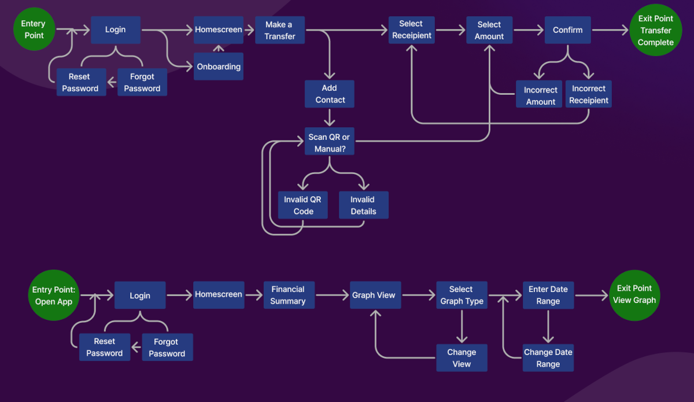
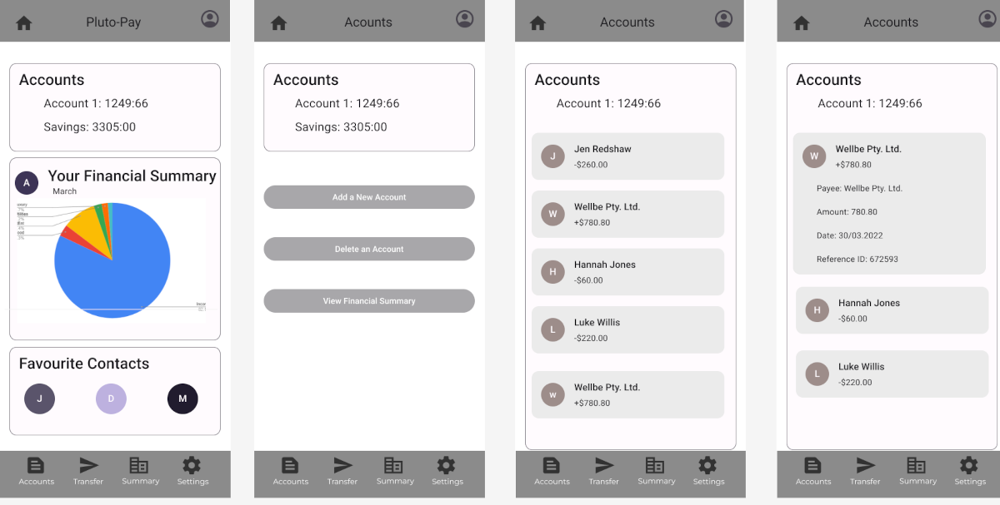
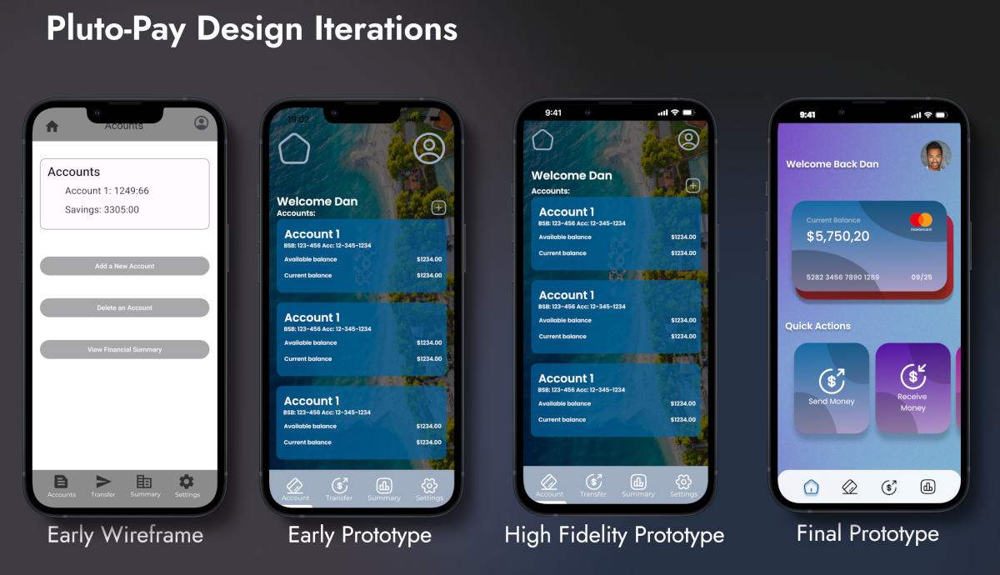
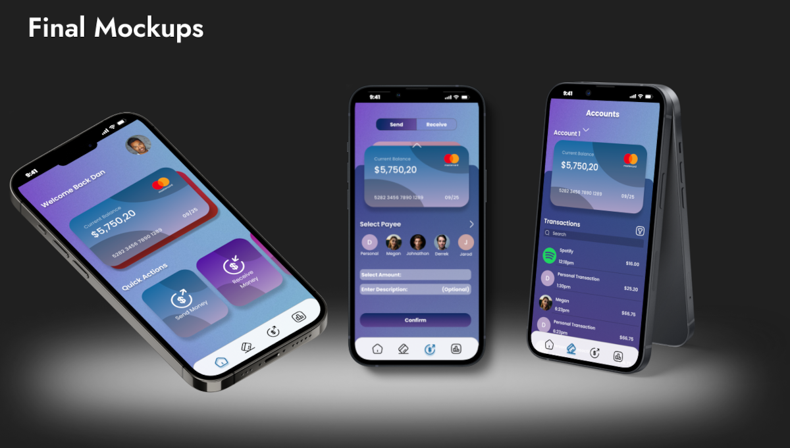

-

Research
Research for Pluto-Pay involved competitive analysis of apps such as Paypal, as well as user interviews. From that research, I crafted the hypothesis that there are so many different types of finance apps currently available, that having functionality of multiple apps in one package would offer users enough of a convenience.
-

Ideation
With that hypothesis, and the research in mind, I crafted two personas to represent the major conceit of the app moving forward. That the app should have the functionalities of both a financial tracking app, and a regular banking app in one; and that each of these processes should be easy, fast, and secure to complete. The user flows I created reflect this as well, highlighting the importance of having both an easy way to add and transfer to new contacts, and robust financial tracking capabilities.
-

Wire frames
I’ve included these early wire frames because they provide a lot of contrast to how I initially imagined Pluto-Pay would look, versus how it ended up looking once I had a better grasp of design principles. While the overall skeleton of the website remains the same, much of the layout and design would change over subsequent iterations.
-

Iterations
Here you can see how the final design of the prototype improved with each iteration. This involved a lot of feedback from both mentors and peers. Which compelled me to completely redesign the initial prototype into the final version you can see on the right. The original prototype was over-designed and cluttered, mostly due to the fact that I wasn’t confident in my design skills at the time. However, you can see the drastic improvements made to the final prototype; thanks largely to extensive feedback and honed design skills.
-

Conclusion
As my first design project, Pluto-Pay saw the most drastic changes during its lifetime. As I picked up more skills, and learnt more about general design standards, each iteration improved pretty dramatically. It also taught me the full range of UX designer skills that I would employ in all future projects. I think looking back on the Pluto-Pay project is most interesting for me, as you can see the tangible progress I make after each step.
Read more in my full case study here!